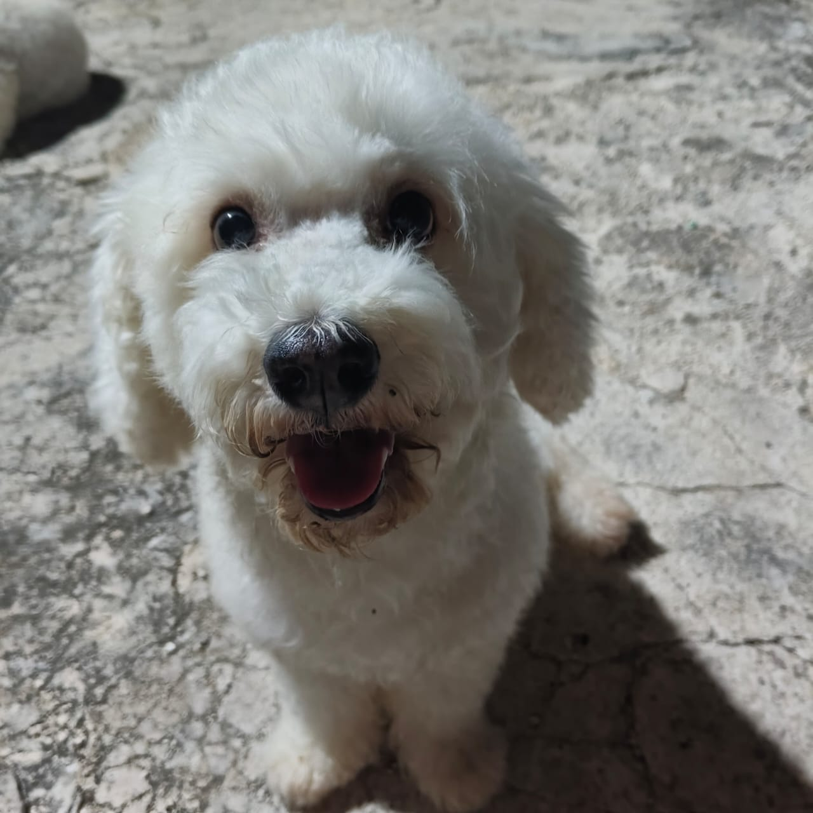
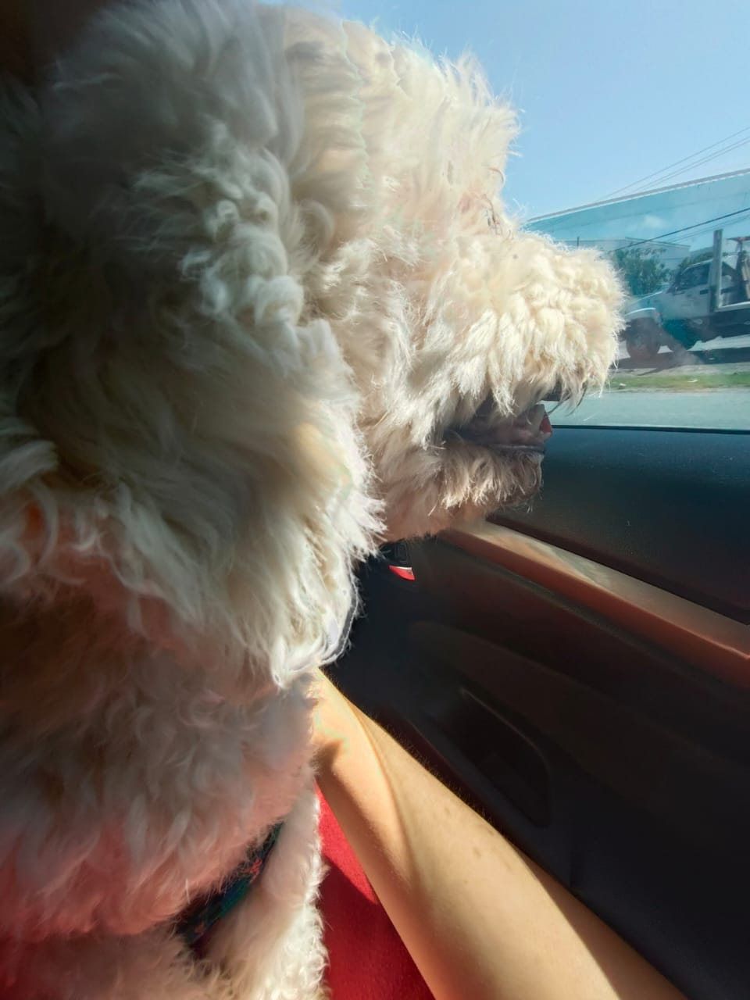
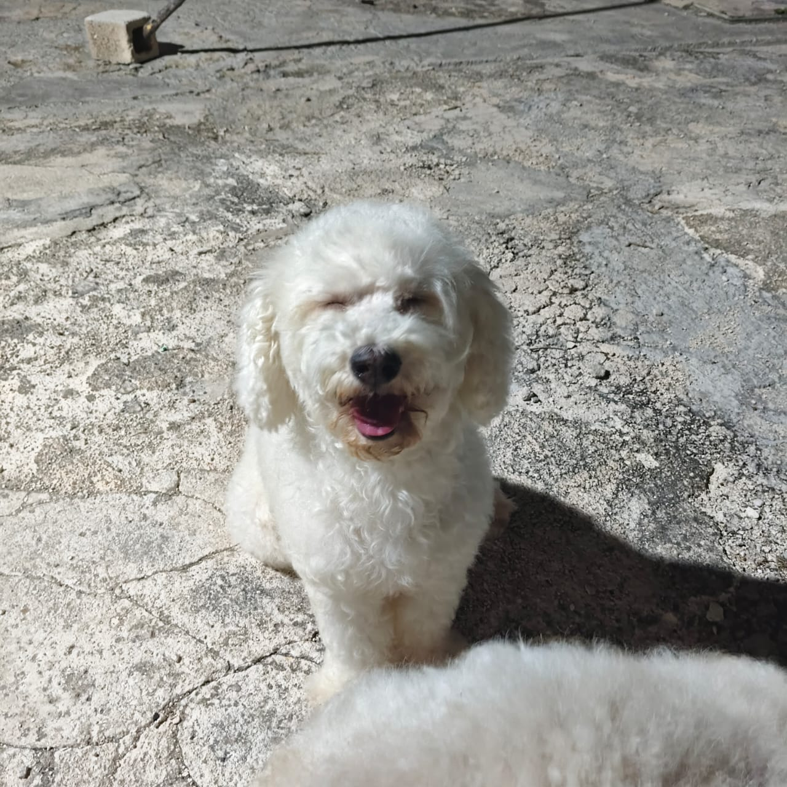

El corazón de nuestra familia
Espíritu Juguetón
A pesar de sus 9 añitos, Nieve conserva la alegría y chispa de una cachorrita. Le encanta correr, jugar con su hermana mayor Cosy (aunque no sean de sangre) y alegrar el hogar.
Amor Incondicional
Es una perrita sumamente noble y cariñosa. Siempre busca dar compañía, acurrucarse y regalar miradas llenas de gratitud y ternura.
Una Gran Luchadora
Hoy se enfrenta a un desafío de salud, pero con el tratamiento médico adecuado y nuestro apoyo colectivo, sabemos que saldrá adelante.
🎉 ¡Excelente Noticia: Los análisis confirman que NO TIENE METÁSTASIS!
Los estudios clínicos y radiografías mostraron que sus pulmones y órganos vitales están completamente limpios. Esto es una maravillosa noticia: el cáncer no se ha extendido, lo que le da a Nieve una gran oportunidad de superar esto y seguir viviendo muchos años felices a nuestro lado.
El diagnóstico de Nieve
A Nieve se le detectaron tumores en las glándulas mamarias. Tras realizar sus estudios completos, el veterinario indicó que es necesario retirarle ambas cadenas mamarias en dos cirugías separadas (primero una cadena y, una vez cicatrizada y recuperada, la segunda).
La recuperación de cada cirugía será un proceso lento y delicado. Se requerirá material de curación constante (gasas estériles, apósitos, faja/cono, antisépticos), medicación para el dolor y visitas veterinarias extras de seguimiento:
-
1. Estudios Clínicos y Radiografías ¡Sin Metástasis!Órganos y pulmones sanos confirmados para proceder con seguridad quirúrgica.
-
2. Primera Mastectomía (1ª Cadena Mamaria) Próximo PasoExtracción de la primera cadena de glándulas mamarias, quirófano y anestesia especializada.
-
3. Segunda Mastectomía (2ª Cadena Mamaria)Segunda intervención programada una vez que Nieve se recupere y cicatrice de la primera.
-
4. Recuperación, Curaciones y Visitas ExtrasProceso lento: antibióticos, analgésicos, apósitos, gasas, curaciones y consultas de seguimiento.
Apoyo Médico Directo
Campaña ActivaCada aportación se destina 100% a los gastos de las cirugías, estudios clínicos, curaciones y medicación de Nieve.
Estaremos compartiendo todas las recetas, notas médicas y comprobantes veterinarios con quienes nos apoyen.
Presupuesto Estimado y Meta de Apoyo
El costo estimado para cubrir ambas intervenciones quirúrgicas, medicamentos, insumos de curación y consultas de seguimiento supera los $10,000 MXN. A continuación detallamos cada etapa:
1ª Cirugía: Mastectomía Cadena Mamaria
Etapa 1 · PrioritariaExtracción quirúrgica de la primera cadena de glándulas mamarias con tumores, quirófano, honorarios veterinarios, anestesia inhalatoria y monitoreo transoperatorio.
- Quirófano y Anestesia
- Extracción de 1ª Cadena
- Monitoreo Veterinario
2ª Cirugía: Mastectomía Segunda Cadena
Etapa 2 · ProgramadaUna vez que la herida de la primera intervención cicatrice adecuadamente, se retirará la segunda cadena mamaria para erradicar totalmente el riesgo tumoral.
- Segunda Mastectomía
- Quirófano Especializado
- Anestesia y Recuperación
Medicamentos Post-operatorios (Ambas Fases)
Tratamiento ContinuoAntibióticos para prevenir infecciones, analgésicos de grado veterinario para el control del dolor y desinflamatorios para una recuperación segura.
- Antibióticos
- Analgésicos y Control del Dolor
- Protectores Gástricos
Material de Curación y Visitas Veterinarias Extras
Recuperación LentaLa recuperación será prolongada y requiere insumos diarios (gasas estériles, apósitos, fajas protectoras, collar isabelino, antisépticos) y consultas extras de revisión y retiro de puntos.
- Gasas, Apósitos y Soluciones
- Faja / Cono Protector
- Consultas Extras y Retiro de Puntos
📊 Avance de Recaudación
Termómetro actualizado de donaciones para el tratamiento de Nieve.
Actualizamos este contador periódicamente conforme recibimos las aportaciones. ¡Cada granito de arena cuenta enormemente!
💡 Esterilizar a tus mascotas salva vidas
Queremos que la historia de Nieve sirva también para ayudar y concientizar a más familias con perritas y gatitas:
Previene Tumores Mamarios
Esterilizar a perritas y gatitas a temprana edad reduce hasta en un 90% a 95% la probabilidad de que desarrollen tumores en las glándulas mamarias.
Elimina Infecciones Mortales
Evita completamente la piometra (infección uterina grave y de urgencia) y reduce problemas hormonales o quistes ováricos comunes en la adultez.
Mayor Esperanza de Vida
Las mascotas esterilizadas viven vidas más largas, saludables y libres del estrés del celo. Consulta a tu veterinario de confianza para hacerlo a tiempo.
¿Cómo puedes apoyar a Nieve?
Cualquier aportación o simplemente compartir este enlace nos acerca más a su recuperación.
Galería de Nieve
Aquí iremos subiendo sus fotos y avances durante su recuperación.



Actualizaciones de Salud
¡Sin Metástasis y Órganos Sanos!
Los análisis y radiografías confirmaron que no hay metástasis en pulmones ni órganos. Con este excelente resultado, el siguiente paso prioritario es su primera mastectomía para retirar los tumores de su cadena mamaria.
Plan Quirúrgico: Mastectomía en Dos Fases
Debido a la ubicación de los tumores en las glándulas mamarias, el equipo veterinario determinó operar en dos cirugías independientes para no comprometer su piel y permitir una cicatrización segura.
Inicio de la Campaña de Apoyo
Abrimos este espacio para recaudar apoyo y mantener informados a todos los que nos quieren ayudar con los gastos veterinarios de Nieve. ¡Muchas gracias de corazón!